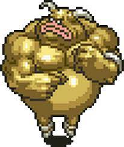
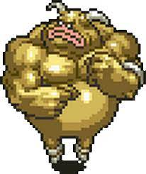

Descrição do Personagem
Masa & Mune são os espíritos gêmeos que habitam a lendária espada Masamune em Chrono Trigger. Eles aparecem como dois jovens travessos que desafiam os heróis para provar sua dignidade de empunhar a Masamune.
Masa é o mais calmo e racional dos dois, enquanto Mune é mais impulsivo e energético. Juntos, eles testam os heróis em combate antes de permitir que a espada seja utilizada por eles. Sua forma final é uma fusão poderosa conhecida como Masamune.
A Masamune é crucial na batalha contra Magus e na jornada para derrotar Lavos. Os espíritos de Masa e Mune continuam a assistir aos heróis, prontos para oferecer sua força sempre que necessário.